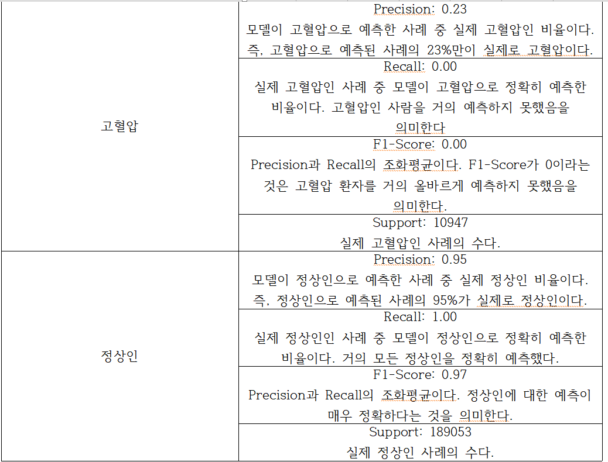
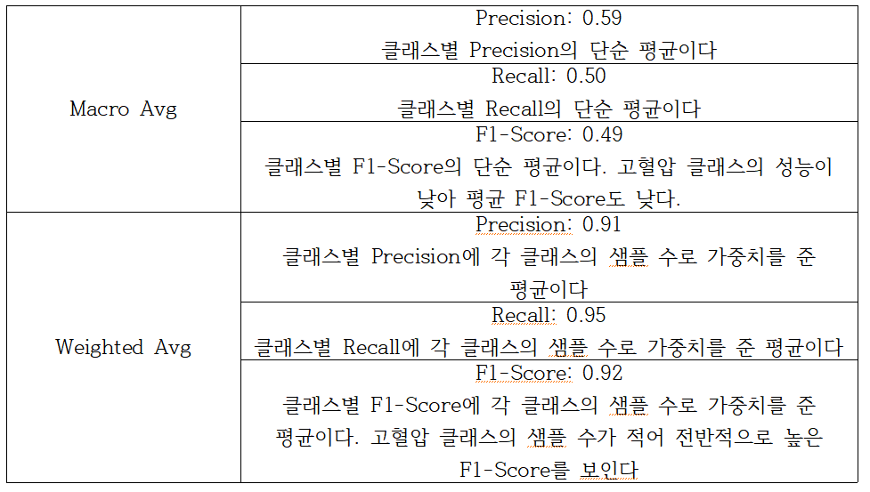

본론

1) 데이터 전처리 과정
이 프로젝트에서 수행한 전처리 과정은 다음과 같다.
우선 데이터가 담겨있는 csv 파일의 데이터를 담은 데이터프레임 안에 결측치가 있는지를 확인하기 위해 isnull() 함수와 sum()함수를 사용했다.
isnull()함수 [3] 는 데이터프레임의 각 요소가 결측치인지 아닌지를 True나 False로 나타내는 새로운 데이터프레임을 반환한다.
sum()함수는 isnull()함수에 의해 생성된 데이터프레임에서 True값을 1로 간주하고, 각 열의 True값들의 총합을 계산한다.
그렇게 data.isnull().sum()을 출력하면, 데이터프레임 data의 결측치의 개수를 출력할 수 있다.
data에 결측치가 있음을 확인했으니까 이제 결측치들을 처리해야 한다. 우선, 데이터셋에 있는 결측치를 처리하기 위해 수치형 변수의 결측치를 해당 열의 평균값으로 대체했다.
그러기 위해 사용한 것이 mean() 메서드와 fillna() 메서드다. data.mean(numeric_only=True)는 데이터프레임 data의 수치형 열들에 대한 평균값을 계산해준다. 여기에서 numeric_only=True 옵션은 수치형 데이터만 대상으로 계산을 수행해주는 역할을 한다.
그렇게 구한 구한 수치형 변수의 평균값을 num_mean 변수에 집어넣고, 그 값들을 결측치에 채워넣으면 된다. 그러기 위해 data.fillna(value=num_mean, inplace=True)를 작성했다. [4] 이 코드는 데이터 프레임 data에서 결측치를 num_mean으로 계산된 각 열의 평균값으로 채운다.
이 때, inplace=True 옵션을 사용해서 원본 데이터프레임 data가 수정된다.
이렇게 결측치들을 채워봤으니 다시 결측치의 여부를 확인해봐야 한다. data.isnull().sum() 을 출력하면 출력값들이 모든 열에 대해 0이 되었음을 확인할 수 있다. 그러므로 범주형 변수는 결측치가 없었다는 의미다. 그렇기에 범주형 변수는 결측치를 채우는 작업을 수행할 필요가 없다.
결측치를 처리했으니 이제는 target 변수를 정의해야 한다. data의 feature들 중, '수축기혈압'과 '이완기혈압'을 기준으로 고혈압 여부를 '고혈압'과 '정상인'으로 라벨링해서 타겟 변수를 생성했다. 고혈압 환자로 판단하는 기준인 '수축기혈압'이 140이고, '이완기혈압'이 90이상인 경우를 타겟변수 '고혈압'으로 정의했다. [1]
2) 사용한 인공지능 모델
이 프로젝트에서는 Random Forest 분류기를 인공지능 모델로 사용했다. Random Forest 모델은 분류, 회귀 분석 등에 사용되는 앙상블 학습 방법 중 하나 [5] 로 여러 개의 결정 트리를 훈련하고, 그 예측값들을 결합해서 최종 예측을 생성하는 방식이다.
Random Forest의 특징은 다음과 같다.
Random Forest 모델은 앙상블 학습 방법 중 하니아므로, 과적합을 방지해서 일반화 성능을 향상시킬 수 있다. 또한 Random Forest 모델은 각 변수의 중요도를 측정할 수 있어서, 모델이 어떤 변수를 중심적으로 사용하는지 파악할 수 있다. 이러한 장점들 때문에 Random Forest를 학습 모델로 사용하는 경우가 많다.
RandoomForest 모델의 사용법은 RandomForestClassifier(n_estimators=100, *, criterion='gini', max_depth=None, min_samples_split=2, min_samples_leaf=1, min_weight_fraction_leaf=0.0, max_features='sqrt', max_leaf_nodes=None, min_impurity_decrease=0.0, bootstrap=True, oob_score=False, n_jobs=None, random_state=None, verbose=0, warm_start=False, class_weight=None, ccp_alpha=0.0, max_samples=None, monotonic_cst=None)이다.
RandomForest 모델은 sckiit러닝 사이트를 참고해서 구축했다.
3) 실험 결과와 그에 각 결과에 따른 해석
Random Forest 모델을 훈련한 후에 5-fold 교차 검증과 test 세트를 통해 성능을 평가했다. 각 폴드에서의 정확도는 아래에 첨부된 사진과 같다.
위의 사진 중, 첫 번째 줄의 출력 결과를 설명해보겠다. 첫 번째 fold에서의 정확도: 0.944055, 두 번째 fold에서의 정확도: 0.944355, 세 번째 fold에서의 정확도: 0.9278, 4번째 fold에서의 정확도: 0.730155, 5번째 fold에서의 정확도: 0.58866 이다.
이 다섯 개의 결과들은 각 fold에서 모델이 얼마나 정확하게 고혈압 여부를 예측했는지를 나타낸다. 출력 결과를 살펴보면, 높은 정확도를 보인 fold들들도 있지만, 4번째와 5번째 fold에서는 상대적으로 낮은 정확도를 보이고 있음을 알 수 있다.
한편, 두 번째 줄의 출력 결과는 Mean accuracy인데, 이 값은 각 fold에서의 정확도의 평균을 구해서 모델의 전체적인 성능을 평가할 수 있다. 여기에서 평균 정확도는 0.8265129999999999로, 이는 모델이 약 82.65%의 정확도로 고혈압 여부를 예측할 수 있음을 의미한다. [6]
교차 검증을 한 결과, 모델은 대체적으로 높은 정확도를 보였지만, 일부 fold에서는 낮은 정확도를 나타냈음을 알 수 있다. 이는 데이터셋의 특정 부분에서 모델의 성능이 저하되었을 가능성이 있음을 의미한다.
평균 정확도가 82.65%이므로 전반적으로 모델의 성능은 괜찮은 편이다. 그렇지만 데이터셋의 일부 부분에서는 낮은 성능을 보이므로 모델의 성능을 더욱 개선시키기 위해 추가적인 작업이 필요하다.
예측 결과를 출력하는 코드
위의 사진은 모델이 test 세트에 대해 예측한 결과를 보여준다. 각 출력 결과를 해석하면 다음과 같다.
이 인공지능 모델은 199960명의 test 샘플을 정상인으로 예측했고, 40명의 test 샘플을 고혈압 환자 수로 예측했다. 이 예측 결과를 직관작으로 보기 위해 아래 사진을 첨부한다.
이 막대그래프를 보면 알 수 있듯이 예측 결과 y_pred는 거의 '정상인'으로 예측되었음을 확인할 수 있다. 이는 모델이 거의 모든 샘플을 정상인으로 예측했음을 의미한다.
이러한 실험 결과에 대해 해석해보자. 모델은 test 데이터의 거의 모든 샘플을 정상인으로 예측했기 때문에 모델이 정상인 클래스에 과도하게 치우쳐 학습되었음을 알 수 있다. 즉, 모델이 불균형한 데이터셋에서 정상인 클래스의 비율이 높기 때문에 정상인으로 예측하는 경향이 강하다.
결국 이 모델은 고혈압 환자 클래스의 특성을 제대로 학습하지 못했음을 알 수 있다. 모델의 성능을 개선시키기 위해서는 고혈압 환자 클래스의 비중을 늘려 정상인 클래스의 비중과의 차이를 줄이거나, 모델을 학습할 때, 클래스의 가중치를 소구 클래스 샘플에 더 높게 할당하면 된다. 이것도 싫다면, bagging, boosting같은 앙상블 기법을 사용해서 예측율을 상승키거나을 사용하거나 [7] 하이퍼파라미터 튜닝을 통해 모델의 성능을 향상시킬 수 있다.
다른 성능지표들도 살펴보자.
위의 사진은 모델의 성능을 평가하는 다양한 지표를 보여주고 있다. 각각의 지표에 대해 해석해보자.
Accuracy: 0.945155
Accuracy는 전체 데이터에서 모델이 정확하게 예측한 비율이므로, 이 모델이 94.52%의 정확도로 고혈압 여부를 예측했음을 알 수 있다.
Accuracy [9] 의 밑에 Classification Report가 나와있다. 이를 해석하면 다음과 같다. [8]


위의 두 사진을 보면 알 수 있듯이 모델은 정상인 클래스를 매우 잘 예측하는 반면에 고혈압 클래스는 거의 예측하지 못하고 있다. 이는 데이터의 불균형으로 인한 문제일 가능성이 높다. 즉, 데이터셋에서 정상인의 비율이 압도적으로 높기 때문에 모델이 정상인 클래스에 학습되었을 가능성이 있다.
이러한 문제를 해결하기 위한 방법들은 아까 설명했다.
위의 사진은 혼동행렬을 출력 결과다. 혼동행렬 역시 모델의 성능을 평가하는데에 사용된다. 혼동행렬에서 행은 실제 클래스를 의미하고, 열은 모델이 예측한 클래스를 의미한다. 그걸 바탕으로 성능평가 지표가 4개 나오는데, 그것들은 TP, TN, FP, FN이다. 여기에서 TP는 고혈압을 정확하게 예측한 경우고, TN은 정상인을 정확하게 예측한 경우고, FP는 정상인을 고혈압으로 잘못 예측한 경우고, FN은 고혈압을 정상인으로 잘못 예측한 경우다. [12]
출력된 혼동행렬을 해석하면, TP값이 높다는 데에서모델이 고혈압을 매우 예측하는 반면에 FP값도 높다는 사실에서 정상인을 고혈압으로 잘못 예측하는 경우가 많다는 사실을 알 수 있다.
또 다른 성능지표로는 ROC 곡선이 있는데, 위의 사진이 ROC 곡선이다. ROC 곡선은 x축이 FPR(False Positive Rate)와 y축이 TPR(True Positive Rate)인 곡선 [11] 이다. 이 때, FPR은 정상인 중, 고혈압으로 예측한 비율을 의미하고, TPR은 고혈압인 샘플 중, 모델이 올바르게 예측하는 비율이다. 이 곡선은 y=x라는 대각선보다 위쪽에 위치할수록 모델의 성능이 좋다.
한편 이 그래프에서 ROC curve (area = 0.69)라는 부분이 보일 것이다. 여기의 숫자 0.69는 AUC값이다. AUC는 Area Under the Curve의 약자로서, ROC 곡선 아래의 면적을 의미한다. AUC값은 0에서 1 사이의 값을 가지며, 1에 가까울수록 모델의 성능이 좋다. 여기에서 AUC 값은 0.69이므로 모델이 랜덤 추측보다는 분류를 잘하지만(0.5보다 값이 크므로), 성능이 높다고 하기는 어렵다. [10]
이러한 해석 결과를 바탕으로 이 모델은 성능 개선이 필요함을 알 수 있다.